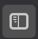

The Menu bar consists of five elements: "Create Folder", "Delete" , "Export", "Import" and "Move".
You have no idea how to use this awesome addon? Then this is the right place for you.
When you are seeing this window the most difficult step is already done. But If you want to hide or closed the sidebar accidentally, just
look out for this symbol.

The Menu bar consists of five elements: "Create Folder", "Delete" , "Export", "Import" and
"Move".
To create a new folder just click on the "Create Folder" icon in the menu bar, an input field wil appear. Type your desired name, hit enter and you've successfully created a new folder.
To delete a folder or a tab just drag the to-be-deleted Item onto the "trashcan" and the element wil be deleted. If you've activated the "Close tabs when deleting folder" entry in the settings menu, all Elements (Tabs) inside the deleted FOlder will be closed, "never to be seen again", so be careful.
It's recommended to regularly backup your data due to possible data loss because of bugs or an addon update. By clicking on the "Export data" icon a new window will open with the corresponding JSON data that can be saved in a file.
If you want to restore a backup use the "Import data" icon. A new tab will be opened with an input-field where you can paste the
backed up json data.
WARNING all data currently saved will be overwritten when importing other json data.
The order of the elements aren't appealing to you? Just click on this icon to change to the view to the rearrange view where all other functionality will still be available but new text will appear. "Insert below..." will appear below every Element in the list so you change to order of every element, except "Unordered Tabs" and "Pinned Tabs", by dragging the to-be-moved element over the "Insert below..." text. It's just like dragging an element into a folder.
By dragging an Tab or an folder over another folder you can easily created nested folder structures. To move Folders into the root directory, just drag the folder into the "Unordered Tabs" folder.
To open settings just go to about:addons in a new tab, click on eclipseTab and Preferences. In here you can set various
settings like "Developer View", Switch between Light and Dark mode, change the "Deleting folders" behavior and switch
between hiding tabs rather than switching directly to that tab. To save your new settings and to take affect, just click "Save"
and switch the current open tab to reload the view.